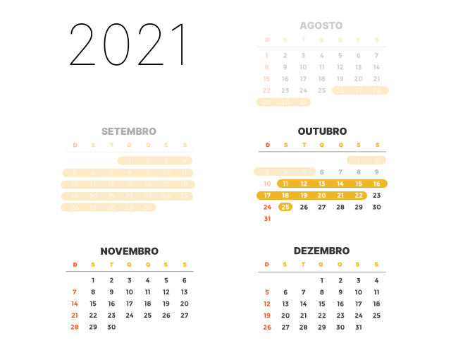

URGENTE: As urnas eletrônicas foram atacadas!
Saiba por que, apesar de verdadeiro, esse alerta não coloca em xeque as eleições desse ano
Em novembro de 2021, ocorreu o ataque mais recente às urnas eletrônicas. Antes dele, elas foram violadas em 2019, 2017, 2016, 2012 e 2009. Nessas 6 ocasiões, tanta a estrutura física da urna, quanto programas que operam dentro dela, foram deliberadamente atacados, com o consentimento do Tribunal Superior Eleitoral (TSE). O órgão, responsável pelo processo eleitoral brasileiro, promove o Teste de Segurança Pública para detectar brechas de segurança no sistema eletrônico eleitoral. Entenda como funciona o TPS:
